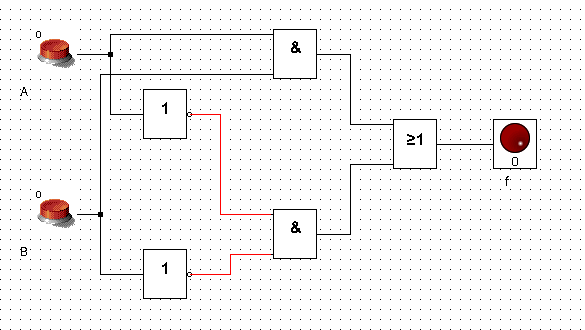

Klausur am 30.10.2026: Teil A ohne Hilfsmittel, Teil B am PC mit LogicSim.
So gehst du vor:
Checkliste: Schätze dich ehrlich ein.
Stationen: Bearbeite zuerst die Stationen zu deinen Punkten bei „noch nicht“. Arbeite im Hefter bzw. in LogicSim. Vergleiche nach jeder Station mit der Lösungsmappe am Lehrertisch. Die Hilfekarten blendest du per Knopf ein – nutze sie erst, wenn du nicht weiterkommst.
Abschluss: Schätze dich am Ende der Stunde noch einmal ein, notiere, was du noch üben willst, und lade deine Checkliste herunter.
Deine Einträge bleiben in diesem Browser gespeichert, bis du sie zurücksetzt.
Checkliste Lernbereich Technische Informatik
Die Checkliste umfasst den ganzen Lernbereich, nicht nur die Klausur. Kreuze zu Beginn der Stunde an, wie sicher du dich fühlst.
Nr.
Ich kann …
sicher
teilweise
noch nicht
Übung
Stationen
Fülle zuerst die Checkliste aus, dann siehst du hier, welche Stationen für dich wichtig sind.
Station 1: Ein Datenpaket, viele Bedeutungen
Zeit
Sozialform
Hilfsmittel
Checkliste
ca. 15 min
Einzelarbeit
keine
Nr. 1 bis 5
Ein Mikrocontroller im Schulgarten sendet jede Minute ein Datenpaket aus vier Bytes an den Schulserver. Ein Paket lautet in Hexadezimaldarstellung:
47 F6 5A C8
Laut Dokumentation bedeutet Byte 1 eine Stationskennung als ASCII-Zeichen, Byte 2 die Temperatur in °C als 8-Bit-Zweierkomplement, Byte 3 den Wasserstand in cm als Festkommazahl mit vier Vor- und vier Nachkommastellen und Byte 4 einen vorzeichenlosen Zähler für Bewegungen am Gartentor.
1.1Wandeln Sie alle vier Bytes in Dualzahlen um. AFB I
1.2Geben Sie die Stationskennung als Zeichen an. AFB I
1.3Ermitteln Sie die gemessene Temperatur. AFB I
1.4Ermitteln Sie den Wasserstand. AFB I
1.5Bis zum nächsten Paket öffnet sich das Gartentor 60-mal. Ermitteln Sie im Dualsystem, welchen Wert Byte 4 im nächsten Paket enthält. AFB II
1.6Byte 2 hätte als vorzeichenlose Zahl den Wert 246. Erläutern Sie, wodurch festgelegt wird, wie ein Byte zu deuten ist. AFB II
1.7Ein Mitschüler schlägt vor, den Wasserstand künftig auf Zehntelzentimeter genau als Festkommazahl zu speichern, „denn mit genügend Nachkommabits ist 0,1 exakt darstellbar“. Beurteilen Sie diese Begründung. AFB III
ZusatzGeben Sie allgemein an, welcher Wertebereich mit n Bit im Zweierkomplement darstellbar ist, und berechnen Sie ihn für 4, 12 und 16 Bit.
Im Zweierkomplement hat das höchste Bit den Stellenwert −128.
H2 Festkomma und Überlauf
Nachkommastellen: 0,5; 0,25; 0,125; 0,0625.
Ein Bruch ist binär genau dann exakt darstellbar, wenn sein gekürzter Nenner eine Zweierpotenz ist.
Ein 8-Bit-Register speichert nur die unteren 8 Bit eines Ergebnisses.
Station 2: Logik im Alltag
Zeit
Sozialform
Hilfsmittel
Checkliste
ca. 15 min
Einzelarbeit, Vergleich mit Partner
keine
Nr. 6 bis 10
2.1Im Brandschutzkonzept steht: „Wenn ein Rauchmelder auslöst (R), wird die Feuerwehr alarmiert (F).“ Ein Schüler folgert: „Die Feuerwehr wurde alarmiert, also hat ein Rauchmelder ausgelöst.“ Beurteilen Sie diese Folgerung mithilfe der Wahrheitstabelle der Implikation. AFB III
2.2Weisen Sie mit einer Wahrheitstabelle nach, dass (A → B) ↔ (¬A ∨ B) eine Tautologie ist. AFB II
2.3Eine Mitschülerin hat folgende Umformung notiert. Ermitteln Sie den fehlerhaften Schritt. AFB II
Schritt
Umformung
angegebenes Gesetz
¬(A ∧ B) ∨ (A ∧ ¬B)
(1)
↔ (¬A ∧ ¬B) ∨ (A ∧ ¬B)
DeMorgansche Regel
(2)
↔ ¬B ∧ (¬A ∨ A)
Kommutativ- und Distributivgesetz
(3)
↔ ¬B ∧ W ↔ ¬B
Gesetze mit Wahr
2.4Vereinfachen Sie den Term ¬(A ∧ B) ∨ (A ∧ ¬B) korrekt und geben Sie zu jedem Schritt das Gesetz an. AFB II
2.5Eine Funktion f(A, B, C) ist nur für die Belegungen A = 0, B = 1, C = 0 und A = 1, B = 1, C = 0 falsch, sonst wahr. Stellen Sie eine boolesche Funktion für f auf. AFB II
ZusatzVereinfachen Sie Ihre Funktion aus 2.5 so weit wie möglich.
Hilfekarten
H3 Implikation
A → B ist nur falsch, wenn A wahr und B falsch ist. Was folgt daraus für den Fall „B wahr“?
H4 Fehlersuche
Prüfe jeden Schritt einzeln: Setze alle vier Belegungen von A und B vor und nach dem Schritt ein. Schon eine Belegung mit unterschiedlichem Ergebnis zeigt den Fehler.
Wie lautet die DeMorgansche Regel für eine negierte UND-Verknüpfung?
H5 Funktion aus der Tabelle
Aus jeder Wahrheitstabelle lässt sich eine Funktion ablesen. Ein Weg: Jede Zeile mit f = 1 liefert einen UND-Term (KDNF). Hier gibt es aber nur zwei Zeilen mit f = 0 – überlege, ob es kürzer geht, wenn du beschreibst, wann f falsch ist, und das Ganze negierst oder die KKNF nutzt.
Station 3: Vom Halbaddierer zum Volladdierer
Zeit
Sozialform
Hilfsmittel
Checkliste
ca. 20 min
Partnerarbeit am PC
PC mit LogicSim
Nr. 12 und 13
Ihr baut in LogicSim schrittweise ein Rechenwerk für einstellige Binärzahlen. Speichert jeden Zwischenstand unter einem eigenen Namen.
3.1Erstellen Sie die Wahrheitstabelle eines Halbaddierers mit den Eingängen A, B und den Ausgängen S (Summe) und C (Übertrag). AFB I
3.2Führen Sie für den Halbaddierer eine Schaltnetzsynthese in LogicSim durch. AFB II
3.3Erweitern Sie Ihre Schaltung zu einem Volladdierer: Kopieren Sie den Halbaddierer, verarbeiten Sie mit der Kopie die Summe des ersten Halbaddierers und den Eingang Cin, und verknüpfen Sie beide Überträge mit einem ODER-Gatter zu Cout. Testen Sie alle acht Eingangskombinationen. AFB II
3.4Begründen Sie, warum für die Verknüpfung der beiden Überträge ein ODER-Gatter genügt, obwohl beim Addieren eigentlich ein Exklusiv-Oder nahe läge. AFB III
3.5Vernetzung Physik: In einem Addierwerk aus hintereinander geschalteten Volladdierern muss der Übertrag im ungünstigsten Fall durch alle Stellen laufen. Ein Volladdierer braucht etwa 0,2 ns, bis sein Übertrag stabil anliegt. Berechnen Sie die Laufzeit für eine 64-Bit-Addition und vergleichen Sie sie mit der Taktdauer eines 3-GHz-Prozessors. AFB II
Hilfekarten
H6 Volladdierer
Überlege, wann der erste Halbaddierer einen Übertrag liefert und welchen Wert dann seine Summe hat.
Ein Schließfach öffnet sich nur, wenn die eingegebene Ziffer mit der gespeicherten übereinstimmt. Abbildung 1 zeigt einen Baustein der Prüfschaltung für ein einzelnes Bit.

Abbildung 1: Schaltung in der Datei „raetsel.lsim“
4.1Ermitteln Sie die boolesche Funktion f der Schaltung, ohne LogicSim zu verwenden. AFB I
4.2Geben Sie an, welche aus der Aussagenlogik bekannte Verknüpfung die Schaltung realisiert. Prüfen Sie Ihre Antwort anschließend in LogicSim. AFB I
4.3Entwickeln Sie in LogicSim eine Schaltung, die prüft, ob zwei zweistellige Binärzahlen A1A0 und B1B0 gleich sind. Verwenden Sie den Baustein aus Abbildung 1 mehrfach. AFB III
4.4Erläutern Sie, wie sich Ihre Schaltung aus 4.3 für vierstellige Zahlen erweitern lässt und wie viele Bausteine dann nötig sind. AFB II
ZusatzDie Funktion g(A, B, C) ist genau für die Belegungen 000, 001, 010, 011 und 111 wahr. Stellen Sie g möglichst einfach dar. Wählen Sie das Verfahren selbst (z. B. Gesetze der booleschen Algebra oder KV-Diagramm).
Hilfekarten
H7 Rätselschaltung
Lies die Schaltung von rechts nach links: Was muss gelten, damit f = 1 ist?
Zwei Zahlen sind gleich, wenn jede Stelle gleich ist.
Station 5: Ein Blick in den Von-Neumann-Rechner
Zeit
Sozialform
Hilfsmittel
Checkliste
ca. 30 min
Partnerarbeit
Taschenrechner für 5.5 bis 5.7
Nr. 18 bis 22
5.1Ordnet jedem Begriff die passende Aufgabe zu und prüft eure Zuordnung. Skizziert anschließend im Hefter, wie die Komponenten im Von-Neumann-Rechner verbunden sind. AFB I
Begriff
Aufgabe
5.2Im Speicher eines einfachen Von-Neumann-Rechners stehen das folgende Programm und die Daten. Führen Sie das Programm Schritt für Schritt aus, indem Sie die Tabelle vervollständigen. AFB II
Adresse
Inhalt
Adresse
Inhalt
00
LOAD 10 (Inhalt von Zelle 10 in den Akkumulator)
10
7
01
ADD 11 (Inhalt von Zelle 11 zum Akkumulator addieren)
11
5
02
STORE 12 (Akkumulator in Zelle 12 speichern)
12
0
03
HALT
Befehlszähler
geholter Befehl
Akkumulator nach Ausführung
Zelle 12
5.3Erklären Sie den Von-Neumann-Flaschenhals mithilfe einer selbst gewählten Analogie aus dem Alltag. Geben Sie an, was in Ihrer Analogie dem Prozessor, dem Speicher und dem Bus entspricht. AFB II
5.4Die Schule möchte die Abiturarbeiten zehn Jahre lang archivieren und täglich eine Sicherung des Schulservers anlegen. Beurteilen Sie für beide Zwecke, ob optische, elektromagnetische oder elektronische Speichersysteme besser geeignet sind. AFB III
Der Schulserver wertet jede Nacht die Messdaten aus dem Schulgarten aus. Sein Prozessor arbeitet mit 2 GHz. Liegen die Daten eines Befehls im Cache, braucht der Befehl 1 Takt. Bei 5 % der Befehle liegen die Daten nicht im Cache, dann wartet der Prozessor zusätzlich 60 ns auf den Arbeitsspeicher.
5.5Berechnen Sie, wie lange ein Befehl im Mittel dauert und welchen Anteil dieser Zeit der Prozessor mit Warten verbringt. AFB II
5.6Ein Händler bietet einen Prozessor mit 4 GHz an und wirbt: „Doppelte Taktfrequenz – doppelt so schnell!“ Beurteilen Sie diese Aussage für die Auswertung der Messdaten. AFB III
5.7Ermitteln Sie, wie groß der Anteil der Fehlzugriffe beim 2-GHz-Prozessor höchstens sein dürfte, damit ein Befehl im Mittel nicht länger als 1,1 ns dauert. AFB II
ZusatzLest auf den OPAL-Seiten 4.1 und 4.2 nach, wie Pipelining die Befehlsausführung beschleunigt, und erklärt es euch gegenseitig am Beispiel einer Waschstraße.
Analogie-Idee: Wie viele Wege gibt es zwischen „Arbeitsplatz“ und „Lager“?
H9 Takt und Cache
Taktdauer = 1 / Taktfrequenz, z. B. 1 GHz → 1 ns.
Mittlere Zeit pro Befehl = Taktdauer + Anteil der Fehlzugriffe · Wartezeit. Rechne Prozent als Dezimalzahl (5 % = 0,05).
Welcher der beiden Summanden hängt von der Taktfrequenz ab, welcher nicht?
Station 6: Abstimmung im Schülerrat
Zeit
Sozialform
Hilfsmittel
Checkliste
ca. 25 min
Partnerarbeit, 6.1 bis 6.3 auf Papier
Papier, PC mit LogicSim
Nr. 7, 9, 10, 12, 16, 17
Der Vorstand des Schülerrats hat drei Mitglieder. Bei einer Abstimmung drückt jedes Mitglied seinen Taster A, B bzw. C, wenn es mit Ja stimmt (Taster gedrückt = 1). Eine Leuchte J zeigt an, ob der Antrag angenommen ist. Ein Antrag ist angenommen, wenn mindestens zwei Mitglieder mit Ja stimmen.
6.1Erstellen Sie die Wahrheitstabelle für J. AFB I
6.2Geben Sie J als kanonische disjunktive Normalform (KDNF) an. AFB I
6.3Vereinfachen Sie die KDNF mithilfe der Gesetze der Aussagenlogik. Geben Sie zu jedem Schritt das Gesetz an. AFB II
6.4Führen Sie für die vereinfachte Funktion eine Schaltnetzsynthese in LogicSim durch. Wählen Sie drei aussagekräftige Testsituationen, notieren Sie vorher jeweils den erwarteten Wert von J und prüfen Sie ihn in LogicSim. AFB II
6.5Vergleichen Sie die Schaltung zur KDNF mit Ihrer Schaltung aus 6.4 nach der Anzahl der Gatter. Begründen Sie, warum man in der Praxis die vereinfachte Schaltung baut. Gehen Sie auf mindestens zwei Aspekte ein. AFB II
6.6Ein Mitschüler hat eine kürzere Lösung gefunden: J = (A ∨ B) ∧ C. Beurteilen Sie, ob seine Schaltung die Anforderungen erfüllt, und korrigieren Sie sie gegebenenfalls mit möglichst wenig Änderungen. AFB III
6.7Für dringende Anträge erhält das Pult einen Schalter E (Eilantrag). Bei E = 1 genügt schon eine einzige Ja-Stimme, bei E = 0 gilt die bisherige Regel. Geben Sie die boolesche Funktion an und erweitern Sie Ihr Schaltnetz in LogicSim entsprechend. AFB II
ZusatzZeigen Sie, dass sich Ihre Funktion aus 6.7 zu JE = J ∨ (E ∧ (A ∨ B ∨ C)) vereinfachen lässt, und erklären Sie, warum man dabei für den Fall E = 0 kein ¬E braucht.
Hilfekarten
H10 Vom Text zur Funktion
Zähle in jeder Zeile der Wahrheitstabelle die Einsen bei A, B und C.
KDNF: Für jede Zeile mit J = 1 entsteht ein Minterm. Variablen mit dem Wert 0 werden darin negiert.
Vereinfachen: Der Minterm A ∧ B ∧ C passt zu jedem anderen Minterm. Nach dem Idempotenzgesetz darfst du ihn mehrfach hinschreiben.
H11 Prüfen und Erweitern
Eine Schaltung prüfst du, indem du sie für alle acht Belegungen mit der Wahrheitstabelle vergleichst. Schon eine abweichende Zeile genügt.
Erweitern mit einem Schalter: Unterscheide die Fälle E = 0 und E = 1. Baue für jeden Fall eine Teilschaltung und lass E entscheiden, welche gilt.
Am Ende der Stunde
Schätze dich noch einmal ein. Die Spalte „Beginn“ zeigt deine Einschätzung vom Anfang der Stunde.
Nr.
Ich kann …
Beginn
sicher
teilweise
noch nicht
Speichere das PDF bei deinen Unterlagen und nutze es beim Lernen für die Klausur.